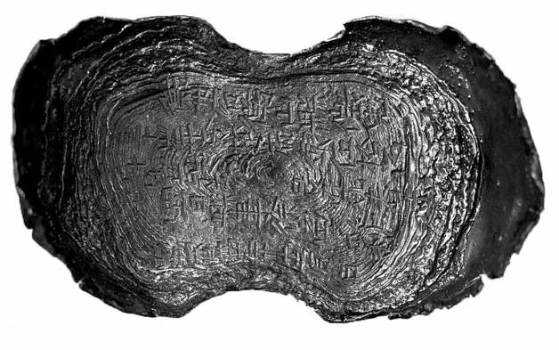
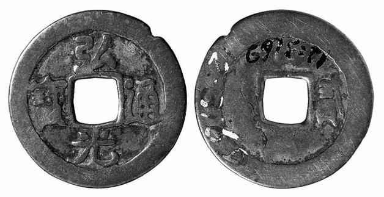

三
以上我们用了一点篇幅，将赋、税在古代的由来及演变略事说明。之后历朝各代，有其不同的赋税制度，且随生产经营的扩展增加了课税的品种，如盐税、茶税、酒税、矿税等。不管如何变来变去，有个基本规律不变；即每当新朝初建，赋税一般或有蠲免或有减轻，与民休息；然而好景不长，贪欲总是难耐，而政治也历来不免日益溷淆的趋势，所以过不了多久，故态复萌，重新回到横征暴敛。
前面曾说，作为随国家而生的事物，赋税作为国家收入原本是必要和合理的。但在冥顽恶戾的权力体系下，所谓必要性最终都会被利用来巧夺豪取，而原本的合理性则不能剩下一星半点。黄宗羲在《明夷待访录》的《田制》篇中说：“魏、晋之民又困于汉，唐、宋之民又困于魏、晋”[17]，他惊讶于历史总是维持着人民处境每况愈下的奇怪趋势，而没有相反的迹象。他指出，症结即在赋税：“吾见天下之赋日增，而后之为民者日困于前。”[18]
关于赋税之重如何不堪，他很快联系了明朝现实来说明：
今天下之财赋出于江南；江南之赋至钱氏（指五代十国之吴越钱氏王朝）而重，宋未尝改；至张士诚而又重，有明亦未尝改。
故一亩之赋，自三斗起科至于七斗，七斗之外，尚有官耗私增。计其一岁之获，不过一石，尽输于官，然且不足。[19]
唐以后，经济重心南移，而重赋随之亦至，不断升级。以至于明代，每亩一年所获粮食不过一石，而承担的赋税，从三斗至七斗不等，再算上其他“法外”侵夺，最终可达“尽输于官，然且不足”的地步。连国中最富庶地区都被压得不能喘息，贫苦之地人民景况更不待言。
我们还记得，初税亩之前的田赋，比例为十分之一，眼下却达到十分之三至十分之七，乃至“尽输于官，然且不足”。黄宗羲提到，汉代文景二帝“三十而税一”，是比较好的时期；光武帝“初行什一之法，后亦三十而税一”。三十则税一，税率相当于3%多一点。他认为这比较合理，主张回到那种样子，并驳斥担心“三十而税一”可能不够用的观点：
或曰：三十而税一，国用不足矣。夫古者千里之内，天子食之，其收之诸侯之贡者，不能十之一。今郡县之赋，郡县食之不能十之一，其解运至于京师者十有九，彼收其十一者尚无不足，收其十九者而反忧之乎！[20]
亦即，根本不是够不够用的问题，而是欲壑难填，但凡贪婪便永远没个够。
回到“三十而税一”，愿望甚好，却实在只是空想。简单拿古今作对比，这思路本身有问题。且不说社会经济水平与结构已有很大差异，即从制度和权力机器的发展变化论，十七世纪前后较诸纪元之初，早就不可同日而语。
这里讲一个细节：锦衣卫。
明代锦衣卫起初为皇家私人卫队或中央警卫部队，后扩大职权，向秘密警察组织过渡。它由朱元璋创建，却又于洪武六年由他亲手解散，“诏内外狱毋得上锦衣卫，诸大小咸径法曹（还权于国家正式司法机构）。终高皇帝世，锦衣卫不复典狱。”[21]“靖难”后，成祖朱棣为加强侦伺箝制，重新起用了这组织，此后终明之世不再废弃，反而大为膨胀。朱元璋时代，锦衣卫人数不曾逾于二千，到世宗嘉靖皇帝，却达六万以上，翻了三十倍。这数字，我们是从《明史》两条记载分析而来。世宗本纪：十六年三月，“革锦衣卫冒滥军校三万余人”。[22]刑法三：“世宗立，革锦衣传奉官十六（十分之六），汰旗校十五（十分之五）。”[23]既然革去的三万余人为总数之一半，则未革之前锦衣卫规模应为六万人以上。然而，这六万余人仅是其正式在编人员，即所谓“旗校”，此外锦衣卫还豢养了眼线、打手等众多临时雇佣人员。王世贞（他就生活在嘉靖年间）提供了这样的数字：“仰度支者（靠锦衣卫开销维持生活者）凡十五六万人”。[24]十五六万人好像也不算很多，殊不知，根据《明史》食货志，当时中国总人口从洪武至万历一直徘徊于五六千万之间。[25]以五六千万人口，而有十五六万锦衣卫，若按比例换算（其间人口增长约二十倍），相当于现在中国十三亿人口，要供应一支三百多万人的秘密警察部队。
这便是制度成本。从秦汉到明代，极权体制生长了小二千年，越来越严密，也越来越臃肿。锦衣卫这地道的皇家鹰犬，用途只是为帝王看家护院，只是令“贤智箝口，小人鼓舌”，然而所耗费用，一分一厘均来自它所荼毒的人民。算算这一类账，就明白何以“天下之赋日增”，以及古代何以什一即够，现在涨到十分之三至十分之七或更多，仍大感不足。
可见，黄宗羲回到古代的愿望极好，可能性却为零。而且以我们现代人看，问题远远不是退回古代、用时间减法方式所能解决。问题不出在时间上，出在制度上。时间只是使制度的弊病益发放大了而已，而弊病早已内在于制度当中。旧时代中国的批判者们，一旦对现实不满，每每想回到古代，原因是他们看不到事情的根源。对此暂点到为止，留待后面再作讨论。
关于人民赋税如何被消耗，还可去了解另一个群体：宗藩。明立国后，就皇室子孙爵位制度做出规定，大的种类有四：亲王、郡王、将军和中尉。具体是，皇子封亲王，亲王诸子年满十岁封郡王（亲王长子为世子，将来袭亲王爵，不在此列）。郡王诸子授镇国将军，孙辅国将军，曾孙奉国将军，四世孙镇国中尉，五世孙辅国中尉，六世以下皆奉国中尉。[26]这是一个庞大群体，连清朝官方所修《明史》都感到不能完全统计，而以“二百余年之间，宗姓实繁，贤愚杂出”一语了之。我们所见着的一个确切数字，出现在《穆宗实录》。隆庆五年六月，河南巡按栗永禄、杨家相以及礼科给事中张国彦奏“于今日当宗支极茂之时，则竭天下之力而难给”。他们说：
国初，亲郡王、将军才四十九位，今则玉牒内见存共两万八千九百二十四位，岁支禄粮八百七十万石有奇；郡县主君及仪宾不与焉。是较国初殆数百倍矣。天下岁供京师者止四百万石，而宗室禄粮则不啻倍之，是每年竭国课之数不足以供宗室之半也。[27]
宗支一年消耗的禄粮，超过了输往京师总量的一倍。该数字中包含如下细节：一、这是截止于隆庆年的统计（之后明朝还有七八十年历史），至此，明室宗支从区区四十九人，成长为近三万人的“大部队”；二、皇家女性后代并未计于其内；三、仅为“玉牒”登记在册的名录。
这近三万之众的亲王、郡王、将军、中尉等，是怎样从国家财年中拿走八百七十万石的（约占四分之一以上）？《弇山堂别集》卷六十七“亲王禄赐考、各府禄米、诸王公主岁供之数”，有具体的数目。例如就藩于开封的周王：
周府：周王岁支本色禄米二万石，袭封（第二代）岁支本色禄米一万二千石，郡王初封岁支禄米二千石，袭封一千石，俱米钞中半（半给粮食半折钱币）。兼支：镇国将军岁支禄米一千石，辅国将军岁支禄米八百石，奉国将军岁支禄米六百石，镇国中尉岁支禄米四百石，俱米钞中半。[28]
周王这一脉所得是比较多的，其他亲王基本为每年一万石，低者可至一千石，以下郡王、将军、中尉等类推。
黄仁宇《万历十五年》自序云：“以总额而言，十七世纪末期的英国，人口为五百万，税收每年竟达七百万英镑，折合约银二千余万两，和人口为三十倍的中国大体相埒。”换言之，如分摊到人头上，中国民众赋税负担极轻。我们用具体的史料来展示这一点。《明史》食货志载：
嘉靖二年，御史黎贯言：“国初夏秋二税，麦四百七十余万石，今少九万；米二千四百七十余万石，今少二百五十余万。”[29]
由此可知，嘉靖初岁入为小麦四百七十万石或稍差，米二千二百万石稍多，按每石米合零点五八四两、每石小麦为米价百分之八十折以银价[30]，全部约合银一千五百万两。当然，这仅为税收大头粮食的数额，加上其他经济作物和工商收入，估计与黄仁宇所说万历初的二千余万两差不多。而人口数量，万历初年全国六千万出头，四十年前的嘉靖初年只少不多，我们也按六千万计算；这样，摊到每个人头上赋税所出仅约零点三三两。而十七世纪末英国人均纳税四两，较中国多十倍而有余。这样看来，十六世纪初的中国人，比之于十七世纪末的英国人，日子岂不太过轻松？
然而，以上的账算得有点糊涂，或者太书呆子。我们再看一些数字：洪武二十六年（1393），“核天下土田，总八百五十万七千六百二十三顷”[31]，到弘治十五年（1502），“天下土田止四百二十二万八千五十八顷”[32]，减少一半有余。什么原因呢？土地当然不会不翼而飞。“嘉靖八年，霍韫奉命修会典，言：‘自洪武迄弘治百四十年，天下额田已减强半，而湖广、河南、广东失额尤多。非拨给於王府，则欺隐於猾民。’”[33]原来是被宗藩或豪强吞并，而关键在于，吞并者将田产据为己有，却并不将赋税额度带走。造成国家能收得上税的田亩“已减强半”，比国初少一半还多。此外还有一种情形：“屯田多为内监、军官占夺，法尽坏。宪宗之世颇议厘复，而视旧所入，不能什一矣。”[34]亦即屯田这部分，税收损失极大，弘治年间已不及国初的十分之一。民田减少一半，屯田几乎收不上税，按理说国家财政至少也比国初下降一半以上才对，但前面所引《明史》食货志数据显示，嘉靖年间较洪武年间出入很小。这意味着什么呢？必然地，亏空部分有人顶上。能是何人？只有小民百姓。小民百姓田地被人夺走，朝廷不管不问，赋税却一分也不少要，此之谓“虚粮”。嘉靖二年，“令天下官吏考满迁秩，必严核任内租税，征解足数，方许给由交代。”[35]下了死命令，官员必须足额完成税收任务，方可升迁。官员于是盯牢里甲，里甲则盯牢小民，已然无田却仍须纳粮的小民，只好“三十六计，走为上”。明后期，离乡逋赋之民极多。人消失了，赋税却不消失，逃走者其税粮又被转嫁，由他人他户包赔：
人去而粮犹在，则坐赔于本户，户不堪赔，则坐之本里，或又坐之亲戚。此被坐之家，在富者犹捐橐以偿，贫者则尽弃产而去。[36]
这是天启七年（1627）吴应箕行经河南真阳（今正阳），遇农夫听闻之后，致书当地父母官反映的情形。以他所睹，“亩之疆界尚在，而禾麦之迹无一存者，计耕作久废矣。”农民逃亡非常严重。
所以，假使只算书呆子账，万历初年中国百姓日子，不知比十七世纪末英国人好过多少，然而到社会现实的实际中看一看，就知道中国的事情从不能以表面数字为凭。人头税赋算下来是零点三三两，可是“额田已减强半”、屯田所入“不能什一”、“人去而粮犹在，则坐赔于本户，户不堪赔，则坐之本里，或又坐之亲戚”，把这些也都考虑在内，则英国以五百万人口而税收“和人口为三十倍的中国大体相埒”，似乎也非单从数字上看起来的那么悬殊。除非英国的数字也和中国一样，不能直截了当算经济账，而要知道经济账后面还隐藏着社会账、政治账。像那个零点三三两，目为真实的人均数字是一种算法，目为国家赋税让拥有土地较少者承担而拥有土地最多者反得逍遥其外，则是另一种算法。两种算法下，明代百姓的日子，会有天壤之别。
又何况十六世纪中期起，国家“多事”，而在原有赋税基础上“加派”不断。这平添的负担，是一笔单独的款项，不在岁入之内，到后来，“加派”的钱粮竟然超过岁入。
《明史》食货志：
世宗（嘉靖皇帝）中年，边供费繁，加以土木、祷祀，月无虚日，帑藏匮竭。司农百计生财，甚至变卖寺田，收赎军罪，犹不能给。二十九年，俺答犯京师，增兵设戍，饷额过倍。三十年，京边岁用至五百九十五万，户部尚书孙应奎蒿目无策，乃议於南畿、浙江等州县增赋百二十万，加派于是始。[37]
万历末期，女真崛起，边事日紧。“至四十六年（1618），骤增辽饷三百万。”第二年，再增二百余万两，并且不是临时性的，成为每年固定征收的款项：“明年，以兵工二部请，复加二厘。通前后九厘，增赋五百二十万，遂为岁额。所不加者，畿内八府及贵州而已。”[38]全国仅北京周遭和无油水可揩的贵州幸免。当时，其实国库充实，但是，有史以来最大的守财奴万历皇帝一毛不拔[39]，而宁肯盘剥人民。
崇祯三年（1630），在五百二十万基础上，辽饷“增赋百六十五万四千有奇”[40]，接近七百万两。崇祯十年，起杨嗣昌为兵部尚书，“因议增兵十二万，增饷二百八十万。”称“剿饷”，以为平寇之用。崇祯皇帝就此发表上谕说：“不集兵无以平寇，不增赋无以饷兵。勉从廷议，暂累吾民一年，除此腹心大患。”[41]
所谓“暂累吾民一年”，实际并非如此。“初，嗣昌增剿饷，期一年而止。后饷尽而贼未平，诏征其半。”[42]一年后未停，仅减半而已。到崇祯十二年，杨嗣昌等又“有练饷之议”，“于是剿饷外复增练饷七百三十万。”[43]
以上，即明末有名的“三大征”。《明史》为之算了一笔总账：
神宗末增赋五百二十万，崇祯初再增百四十万，总名辽饷。至是，复增剿饷、练饷，额溢之。先后增赋千六百七十万，民不聊生，益起为盗矣。[44]
而崇祯时的评论家则说：
万历末年，合九边饷止二百八十万。今加派辽饷至九百万。剿饷三百三十万，业已停罢，旋加练饷七百三十余万。自古有一年而括二千万以输京师，又括京师二千万以输边者乎？[45]
总之，崇祯十二年以后，每年三饷总和已与国家财政年度收入相埒。未有三饷前，人均年纳税银零点三三两，至此人均达七两以上。由此乃知黄宗羲“尽输于官，然且不足”言之不虚。

明代五十两大银锭。
刻有“衡州府衡山县征”、“万历卅四年十二月”等字样。万历皇帝爱财如命，搜刮最狠，直到临死前三年，每年都“加天下田赋”，余如矿税、织造等项不一而足。明十三陵，以其定陵最阔气，形象说明了他敛财的能力。

弘光通宝。
尽管弘光朝为时不过一年，却还是铸造发行了自己的新钱（年号钱）。如现代印钞一样，铸钱也是财政手段，“钱之轻重不常，轻则敛，重则散”，可以起到敛财作用。
三饷所征，据说是用来对付外族侵略和内部反叛的。他们一是来自苦寒之地的原始部族，一是饥寒交迫的乌合之众，而堂堂明帝国既以倾国之力欲予摆平，理应轻松使之化为齑粉。然而十几年下来，数亿银两似乎全部打了水漂，“虏”既未却，“寇”亦未平，这是怎么回事？尤不可思议的是，熬尽民脂，加征如此巨款，朝廷竟仍然无钱可用。